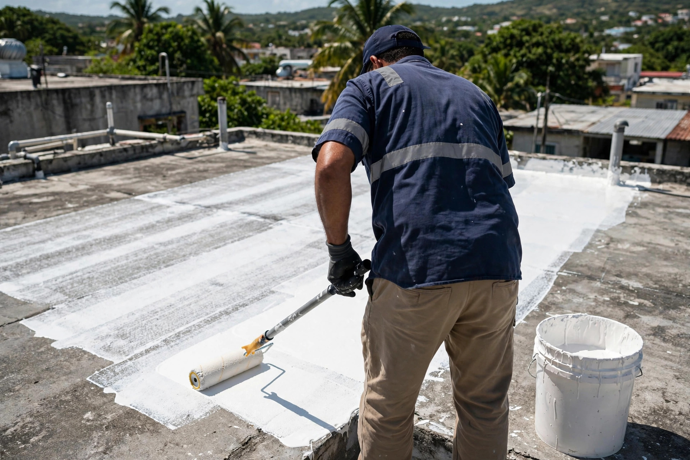
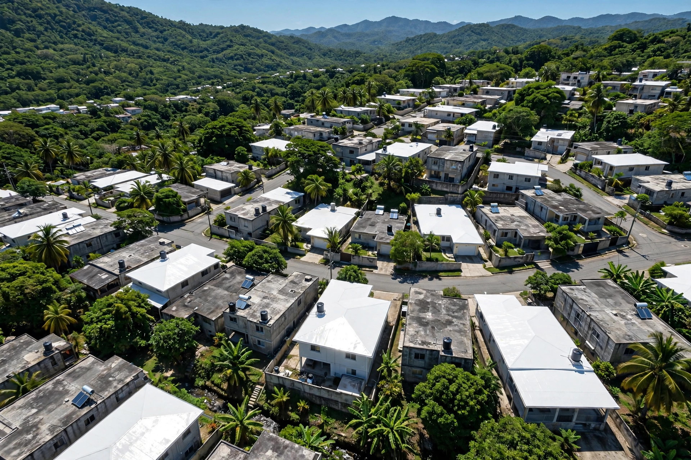

Área norte y centro de PR · Caguas
Sellado de techos en Caguas, Puerto Rico. Expertos en nuestra línea de servicio. Sirvemos el área norte y centro de la isla. Llama al 787-703-4900.
Resultados reales
Cada foto es un trabajo real en techos. Desliza la cinta y toca cualquier foto para verla grande.


← desliza para ver los trabajos →
Lo que hacemos
Del diagnóstico al sellado final: un solo equipo responsable de que tu techo quede seco.
Evaluamos grietas, filtraciones y drenaje antes de proponer el sistema.
EvaluaciónLimpieza y preparación profesional: la base de un sellado duradero.
PreparaciónAplicación uniforme del sistema de sellado con materiales de calidad.
SelladoFiltraciones corregidas de raíz como parte del proceso.
FiltracionesRevisión final contigo: el trabajo no termina hasta que queda bien.
CalidadServimos el área norte y centro de Puerto Rico desde Caguas.
CoberturaAsí de fácil
Visitamos y evaluamos tu techo en el área norte o centro.
Limpiamos y preparamos el techo a fondo.
Aplicamos el sellado de forma uniforme y completa.
Revisamos el trabajo contigo. La lluvia se detiene aquí.
Quiénes somos
Overall Contractors Group, Inc. en Caguas: sellado de techos para el área norte y centro de Puerto Rico. Somos expertos en nuestra línea de servicio y lo demostramos en cada techo.
Evaluación seria, aplicación impecable y revisión final. Llama al 787-703-4900.
Preguntas frecuentes
Es la aplicación de un sistema impermeable sobre el techo para evitar filtraciones y proteger la estructura contra el agua y el sol.
Manchas de humedad, filtraciones, grietas visibles o un sellado viejo y cuarteado son señales claras. Te lo confirmamos en la evaluación.
Una casa típica toma de 1 a 3 días. Te damos el tiempo exacto al evaluar.
Sí. Los acabados claros reflejan el sol y bajan la temperatura del techo.
El área norte y centro de Puerto Rico, con base en Caguas.
Llama o escribe por WhatsApp al 787-703-4900.
Escríbenos por WhatsApp y cotiza el sellado de tu techo hoy mismo.
Cotiza tu sellado
Teléfono / WhatsApp
787-703-4900Área de servicio
Área norte y centro de PR
Sellado de techos
Residencial y comercial
Llena esto y te abrimos WhatsApp con tu mensaje listo.
Cotización sin compromiso: dinos tu pueblo y el estado de tu techo, y te orientamos con el mejor plan.
Esta página la creó ManuPro. Escríbenos hoy mismo y cotiza la website profesional de tu negocio.
Cotizar por WhatsApp